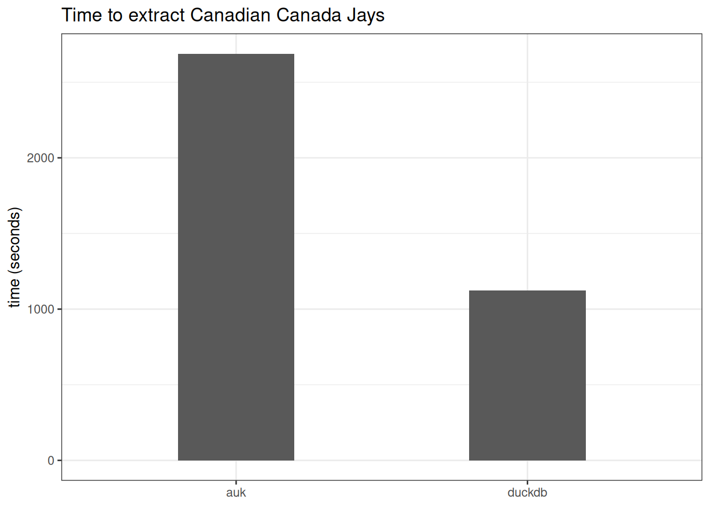
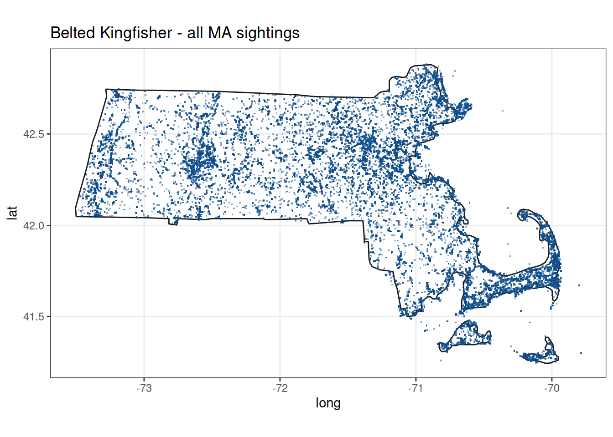
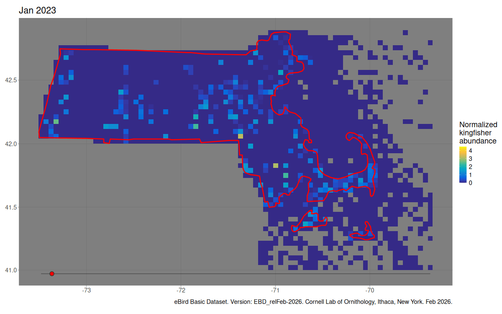

library(DBI)
library(duckdb)
con = dbConnect(duckdb(file.path(getwd(), "ebd.duckdb")))
"ebd" %in% dbListTables(con)[1] TRUEAndrew Ghazi
May 25, 2026
A brief guide to examining eBird data with duckdb.
I’ve been learning about birdwatching lately and wanted to play around with some observational data. The Cornell Lab of Ornithology provides access to their data on eBird through a data request form. At time of writing, it has over two billion observations. So I thought I’d get two birds stoned at once and learn a bit about setting up duckb databases. It started off with a bit of a journey debugging hardware problems as well.
Working with the 200GB file revealed some issues on my PC that were generally too rare to notice otherwise. I first noticed this when computing a sha256sum on the giant .tar I downloaded would sometimes give variable results… Uh oh. This lead me on a long journey of fixing some difficult-to-detect problems. Here’s what I suggest you do to avoid this same fate:
/etc/default/grub GRUB_CMDLINE_LINUX_DEFAULT="splash mem=59GB", then run sudo update-grub.
copies=2. ZFS can theoretically be used to manage bit rot on old drives but I thought it best to just get some new trustworthy hardware.zfs scrub to compare each copy of a chunk against the stored hash and fix it if need be. As long as there aren’t any pairs where both chunks are corrupted, the file can be repaired.Together these techniques should allow me to maintain bit-for-bit data integrity indefinitely and throughout the data processing pipeline. They may be unnecessary if you’re running on institutional computing resources with ECC memory and professionally managed disks. But me, I’m a cowboy 🤠
So, eBird gives us a huge .tar file containing some metadata files and a giant .txt.gz that we want to read into a table in a .duckdb file.
duckdbThe duckdb R package includes a ton of code to compile, which means it takes forever to install from source on Linux. The Ncpus argument of install.packages() only installs packages in parallel, but you can make the compilation of a single package’s compiled code run in parallel by setting the j makeflag via the MAKEFLAGS environment variable:
This is also useful for other R packages that have tons of compiled code and few dependencies e.g. data.table and rstan.
r2u is also a good option.
There are two options on how to do this:
The first option will read the file faster since duckdb’s CSV parser runs in parallel even on gzipped input. However it requires an upfront step of extracting the file, and it requires additional disk space to store that separate copy. Decompressing the .txt.gz to a plain .txt might speed it up as well, but that uses even more space plus it might make things memory bound anyway.
The second option requires less disk space but reading stdin will be single-threaded so if you have a lot of cores it will be slower.
Extract the giant .tar file:
When run on a copy on my fast SSD, this command took about 8 minutes.
Then use duckdb to create the database file. Collapsible block as the SQL command is a bit long:
Put the following SQL in a file:
import.txt
SET memory_limit='30GB';
SET threads=12;
CREATE TABLE ebd AS
SELECT * FROM read_csv('ebd_relFeb-2026.txt.gz',
store_rejects = true,
columns = {'GLOBAL UNIQUE IDENTIFIER': 'VARCHAR',
'LAST EDITED DATE': 'TIMESTAMP',
'TAXONOMIC ORDER': 'BIGINT',
'CATEGORY': 'VARCHAR',
'TAXON CONCEPT ID': 'VARCHAR',
'COMMON NAME': 'VARCHAR',
'SCIENTIFIC NAME': 'VARCHAR',
'SUBSPECIES COMMON NAME': 'VARCHAR',
'SUBSPECIES SCIENTIFIC NAME': 'VARCHAR',
'EXOTIC CODE': 'VARCHAR',
'OBSERVATION COUNT': 'VARCHAR',
'BREEDING CODE': 'VARCHAR',
'BREEDING CATEGORY': 'VARCHAR',
'BEHAVIOR CODE': 'VARCHAR',
'AGE/SEX': 'VARCHAR',
'COUNTRY': 'VARCHAR',
'COUNTRY CODE': 'VARCHAR',
'STATE': 'VARCHAR',
'STATE CODE': 'VARCHAR',
'COUNTY': 'VARCHAR',
'COUNTY CODE': 'VARCHAR',
'IBA CODE': 'VARCHAR',
'BCR CODE': 'VARCHAR',
'USFWS CODE': 'VARCHAR',
'ATLAS BLOCK': 'VARCHAR',
'LOCALITY': 'VARCHAR',
'LOCALITY ID': 'VARCHAR',
'LOCALITY TYPE': 'VARCHAR',
'LATITUDE': 'DOUBLE',
'LONGITUDE': 'DOUBLE',
'OBSERVATION DATE': 'DATE',
'TIME OBSERVATIONS STARTED': 'TIME',
'OBSERVER ID': 'VARCHAR',
'OBSERVER ORCID ID': 'VARCHAR',
'SAMPLING EVENT IDENTIFIER': 'VARCHAR',
'OBSERVATION TYPE': 'VARCHAR',
'PROTOCOL NAME': 'VARCHAR',
'PROTOCOL CODE': 'VARCHAR',
'PROJECT NAMES': 'VARCHAR',
'PROJECT IDENTIFIERS': 'VARCHAR',
'DURATION MINUTES': 'BIGINT',
'EFFORT DISTANCE KM': 'DOUBLE',
'EFFORT AREA HA': 'DOUBLE',
'NUMBER OBSERVERS': 'BIGINT',
'ALL SPECIES REPORTED': 'BIGINT',
'GROUP IDENTIFIER': 'VARCHAR',
'HAS MEDIA': 'BIGINT',
'APPROVED': 'BIGINT',
'REVIEWED': 'BIGINT',
'REASON': 'VARCHAR',
'CHECKLIST COMMENTS': 'VARCHAR',
'SPECIES COMMENTS': 'VARCHAR'});Then run that SQL script using dbExecute() or from the command line:
* with a subset of columns of interest (e.g. to drop the comments columns. Make sure to double quote the column names with spaces). This will use less memory and the database will be smaller, though it will take the same amount of time to read.BCR CODE and PROJECT IDENTIFIERS to VARCHAR because while they appear to be integers in most rows there are a tiny minority formatted as e.g. 1001|1002 or something.dbExecute(con, cmd_string)Now we have the main table in a duckdb database! 🎉
If you’re really short on disk space, you can use the stdin method:
# xOf = tar extract the file to stdout
# name of the tar file and the one file we're extracting
# gunzip it on the fly
# Pipe into this read_csv() command on stdin
# Into a database named ebd.duckdb
# Column specifications replaced with ... for brevity
tar xOf ebd_relFeb-2026.tar ebd_relFeb-2026.txt.gz |
zcat |
head -1000 |
duckdb -c "CREATE TABLE ebd AS SELECT * FROM read_csv('/dev/stdin', ...)" ebd.duckdb I ultimately went with the other approach since I had enough space. Using the stdin approach, it took ~75s on my fast SSD to do 10M rows, so extrapolating from that it would take a bit over 3 hours for the whole thing.
There’s another fairly large table one can get which contains the “sampling level” information i.e. the metadata on individual checklists. This is useful e.g. for deduplicating repeated reports from group events. If many birders go on a walk together, it doesn’t make sense to include all their repeated reports of the same bird.
So we need to get this data into another table in the database. The process is similar. Extract the sampling data from it’s tar file:
For the sake of demonstrating how to do it from R instead of the command line, we’ll do this one with dbExecute. We’ll also let duckdb’s read_csv() function figure out the column types (which works out fine for this table). We’ll put the sampling data into a table called smp:
Thankfully there are no rare weird entries to trip up the column type detection.
Now we have that table too:
Looks like there were some group events that had over 90 people submitting checklists!
# A duckplyr data frame: 2 variables
`GROUP IDENTIFIER` n
<chr> <int>
1 G8511359 93
2 G8511354 92
3 G8511365 92
4 G8511373 91
5 G8511366 90
6 G8511364 90
7 G8511360 88
8 G8511369 88
9 G12500511 87
10 G8511382 87
# ℹ more rowsWhen individuals submit their own checklists from group outings, it’s common for multiple people to report the presence of the same individual bird. For this reason, we need to deduplicate the checklist data. The auk package uses the following method: within each GROUP IDENTIFIER, retain the entry for each bird from the checklist with the smallest SAMPLING EVENT IDENTIFIER. So you also need to group by SCIENTIFIC NAME because not everyone will report the same set of birds.
There are probably a variety of ways to solve this, but I decided to create another table ddp that keeps track of the sampling event identifiers meeting either of these conditions. That way you can inner_join() that table onto any result to dedup it automatically. I’ll demonstrate this in the next section. For small queries it might be faster to dedupe as needed each time rather than join on this large pre-computed result.
After some experimentation with dbplyr::slice_min + manual tweaks, this is the SQL command I settled on to create ddp:
ddp_cmd = '
CREATE OR REPLACE TABLE ddp AS
SELECT "SAMPLING EVENT IDENTIFIER", "SCIENTIFIC NAME"
FROM (
SELECT
"SAMPLING EVENT IDENTIFIER",
"SCIENTIFIC NAME",
"GROUP IDENTIFIER",
RANK() OVER (PARTITION BY "GROUP IDENTIFIER", "SCIENTIFIC NAME" ORDER BY "SAMPLING EVENT IDENTIFIER") AS col01
FROM ebd
) q01
WHERE ((col01 <= 1) OR ("GROUP IDENTIFIER" IS NULL))
'
system.time({dbExecute(con, ddp_cmd)})Should take a few minutes and increase the size of ebd.duckdb by ~5GB.
I’m not 100% confident that it behaves identically to auk::auk_unique() (does one or the other use natural sort and/or account for leading zeros differently?). So if you care about tracking the specific individual people that reported birds then make sure to check that. In my case I just want to drop duplicates, so this will have the same effect even if it doesn’t select the exact same checklist IDs.
Keep in mind that there will still be some computational cost for computing the join. If you want ultimate deduplicated performance could compute the join once and either 1) overwrite the ebd table or 2) store the result in a new table. Option 1 deletes data while option 2 will be highly redundant and nearly double the required disk space.
As I briefly previewed above, I’ve been using duckplyr to examine the data. You give it the path to the database file and the name of the table you want to connect to:
How many observations are there in total?
How many species are there? Which are the most common?
# A tibble: 13,202 × 2
`COMMON NAME` n
* <chr> <int>
1 American Robin 33201054
2 American Crow 33078884
3 Northern Cardinal 30852846
4 Mourning Dove 30642346
5 Blue Jay 27318997
6 Mallard 27013315
7 European Starling 26002263
8 Song Sparrow 25500217
9 Canada Goose 23910940
10 House Sparrow 23894264
# ℹ 13,192 more rowsIs selecting out the data fast? For comparison let’s try the same query Used in the auk quick start guide which are basically these criteria:
auk::read_ebd())Here we’ll do the same thing and collect the result into a data frame in R:
Joining with `by = join_by(`SCIENTIFIC NAME`, `SAMPLING EVENT IDENTIFIER`)` user system elapsed
652.372 683.357 72.369 [1] 190406 52Pretty fast. Keep in mind that my CPU/disk are pretty fast, so YMMV. A couple other performance notes:
explain() can be helpful for seeing that), but SQL afficionados could probably identify other spots to increase performance. user system elapsed
124.324 47.134 13.910 Nice.
auk seems to require gunzipping the main file, and I didn’t have enough space on my fast SSD for that. But I did have enough space on the same slow HDD where I was archiving the original download. So I made a copy of the database file there too for fairness and compared the performance.
bench_comp.R
library(duckdb)
library(duckplyr)
library(auk)
ebd = read_tbl_duckdb('/wdredzfs/data/ebd.duckdb', "ebd")
ddp = read_tbl_duckdb('/wdredzfs/data/ebd.duckdb', "ddp")
db_exec("SET memory_limit='48GB';")
system.time({
f_in <- "/wdredzfs/data/ebd_relFeb-2026.txt"
f_out <- "~/ebd_filtered_grja.txt"
cols <- c("latitude", "longitude", "observation date",
"sampling event identifier", "group identifier", "observer id", "scientific name", "observation count")
# auk forces you to retain some identifier columns for some reason?
ebird_data <- f_in |>
auk_ebd() |>
auk_species(species = "Canada Jay") |>
auk_country(country = "Canada") |>
auk_filter(keep = cols, file = f_out) |>
read_ebd()
}) |> print()
system.time({
cjc = ebd |>
filter(`COMMON NAME` == "Canada Jay" &
`COUNTRY` == "Canada") |>
inner_join(ddp) |>
select(lat = LATITUDE,
long = LONGITUDE,
obs_date = `OBSERVATION DATE`,
`SAMPLING EVENT IDENTIFIER`,
`GROUP IDENTIFIER`,
`OBSERVER ID`,
`SCIENTIFIC NAME`,
`OBSERVATION COUNT`) |>
collect()
}) |> print() user system elapsed
1567.138 1043.386 2688.259
user system elapsed
111.587 50.724 1122.640

So it’s about 2.4x faster with my particular hardware configuration.
Another detail I realized during this comparison: Turns out auk_unique() actually pastes together all the sampling event identifiers by group, it doesn’t just take the lowest one like the documentation suggests at first. This behavior could be reimplemented with duckdb I think, but it would be a bit harder than the join method I used above.
But there are some lingering questions:
In addition to fast filtering, duckdb is very performant for computing summaries. So if you wanted to compute some summary that involves the full dataset, letting duckdb do that part will usually be the fastest way. For example, let’s count the number of unique species that have ever been observed in each US county:
user system elapsed
366.815 16.730 14.348 # A tibble: 3,188 × 3
STATE COUNTY n
* <chr> <chr> <int>
1 South Carolina Georgetown 471
2 Texas Williamson 559
3 Texas Wilson 371
4 Colorado El Paso 614
5 Texas Fort Bend 505
6 Maine Somerset 310
7 California Placer 431
8 Tennessee Davidson 439
9 Oregon Multnomah 552
10 Maine Kennebec 356
# ℹ 3,178 more rowsThat’s pretty good. Turns out that Los Angeles county has the most at 961 unique species.
And now we can analyze like usual now that we have a data frame. Let’s try a scatterplot of belted kingfisher sightings in MA:
mp = map_data("state", "mass")
# Filter by longitude < -69. There are a few observations way out in the ocean?
# Maybe typos or pelagic trips that found some tragically lost birds.
ma_bk |>
filter(long < -69) |>
ggplot(aes(long, lat)) +
geom_polygon(data = mp,
aes(group = group),
fill = rgb(0,0,0,0),
color = "grey10") +
geom_point(pch = 15,
size = .3,
alpha = .5,
color = "dodgerblue4") +
coord_map() +
theme_bw() +
labs(title = "Belted Kingfisher - all MA sightings")
As you can see it’s mostly a map of where people go birdwatching the most, as belted kingfishers are fairly common anywhere there’s water. Let’s do something a bit more interesting and do an animated heatmap where the shading is normalized against the number of checklists in that bucket:
ll = ebd |>
filter(`STATE CODE` == "US-MA" & LONGITUDE < -69.33 & LATITUDE > 41) |>
inner_join(ddp) |>
select(lat = LATITUDE, long = LONGITUDE, sid = `SAMPLING EVENT IDENTIFIER`) |>
collect()
bucket_x = function(x, n = 50) {
# findInterval is faster/better than cut()
rng = frange(x)
cuts = seq(rng[1], rng[2], length.out = n)
cents = cuts + (cuts[2] - cuts[1]) / 2
data.table(y = findInterval(x, cuts, rightmost.closed = TRUE)) |>
mtt(cent = cents[y]) |>
get_elem("cent")
}
llc = ll |>
qDT() |>
mtt(lat = bucket_x(lat),
long = bucket_x(long, 80)) |>
fcount(lat, long)
llc |>
ggplot(aes(long, lat)) +
geom_tile(aes(fill = log(N))) +
geom_polygon(data = mp,
aes(group = group),
fill = rgb(0,0,0,0),
color = "grey10") +
theme_dark() +
coord_map() +
scale_fill_gradientn(colors = pals::parula(100))
get_cuts = \(x, n) {
rng = frange(x)
cuts = seq(rng[1], rng[2], length.out = n)
}
get_bin = \(x, cuts) {
cents = cuts + (cuts[2] - cuts[1]) / 2
data.table(y = findInterval(x, cuts, rightmost.closed = TRUE)) |>
mtt(cent = cents[y]) |>
get_elem("cent")
}
cuts = mapply(get_cuts,
ll |> slt(lat, long),
c(50, 80))
z_df = expand.grid(lat = cuts$lat + (cuts$lat[2] - cuts$lat[1]) / 2,
long = cuts$long + (cuts$long[2] - cuts$long[1]) / 2,
yr = 2023:2025,
mo = 1:12) |>
mtt(N = 0)
ani_df = ma_bk |>
sbt(lat > 41 & long < -69.33) |>
qDT() |>
mtt(lat = get_bin(lat, cuts$lat),
long = get_bin(long, cuts$long),
yr = lubridate::year(obs_date),
mo = lubridate::month(obs_date)) |>
sbt(yr > 2022 & yr < 2026) |>
fcount(lat, long, yr, mo)
z_df = join(z_df, ani_df, how = "anti", on = c("lat", "long", "yr", "mo")) |> qDT()
ani_df = ani_df |> rbind(z_df) |>
join(llc, on = c("lat", "long"), how = "left") |>
mtt(n_per = N/N_llc * 1e4) |>
sbt(whichNA(N_llc, TRUE))
# ani_df |>
# ggplot(aes(long, lat)) +
# geom_tile(aes(fill = log1p(n_per))) +
# geom_polygon(data = mp, aes(group = group),
# color = "grey10", fill = rgb(0,0,0,0)) +
# facet_wrap(vars(yr, mo)) +
# theme_dark() +
# theme(strip.text = element_text(margin = margin()),
# panel.spacing = unit(0, "mm")) +
# scale_fill_gradientn(colors = pals::parula())
ani_df[order(yr, mo), g := .GRP, by = .(yr, mo)]
dt_df = ani_df |>
slt(yr, mo, g) |>
funique() |>
mtt(l = format(as.Date(paste(yr, mo, "01", sep = "-")), "%b %Y")) |>
slt(-yr, -mo)
ani_df = ani_df |>
join(dt_df, on = "g", verbose = FALSE) |>
roworder(g) |>
mtt(dot_pos = min(long) + (g / max(g)) * diff(frange(long)),
l = fct(l))
line_df = ani_df |>
slt(long) |>
smr(variable = c("xend", "x"), value = frange(long)) |>
data.table::transpose(make.names = "variable")
ani = ani_df |>
ggplot(aes(long, lat)) +
geom_tile(aes(fill = log1p(n_per))) +
geom_segment(color = "grey10",
data = line_df,
alpha = 2/3,
aes(y = min(ani_df$lat) - .05,
yend = min(ani_df$lat) - .05,
x = x, xend = xend)) +
geom_point(data = ani_df |> slt(l, dot_pos) |> funique(),
aes(x = dot_pos, y = min(ani_df$lat) - .05),
fill = "red",
size = 4,
stroke = 1,
pch = 21,
color = 'grey20') +
geom_polygon(data = mp,
aes(group = group),
color = "red", fill = rgb(0,0,0,0),
lwd = 1.25) +
# facet_wrap(vars(yr, mo)) +
transition_states(l, wrap = FALSE) +
theme_dark() +
theme(strip.text = element_text(margin = margin()),
panel.spacing = unit(0, "mm"),
text = element_text(size = 18)) +
scale_fill_gradientn(colors = pals::parula()) +
coord_map() +
labs(title = "{closest_state}",
x = NULL,
y = NULL,
fill = "Normalized\nkingfisher\nabundance",
caption = "eBird Basic Dataset. Version: EBD_relFeb-2026. Cornell Lab of Ornithology, Ithaca, New York. Feb 2026.")
animate(ani,
fps = 1,
nframes = 36,
duration = 36,
width = 1.5*800, height = 1.5*500)
Okay, that isn’t as illuminating as I thought it would be, but perhaps a kingfisher ecologist would disagree. You can see some bright spots in some less popular areas sometimes, but that might be the inherent variability of low counts in the denominator coming through. This would probably benefit from some regularization or scale reliant inference but this is fine for a blog post.
I deliberately wrote this post without checking for preexisting work in this area mainly because I wanted to go through this as a learning exercise. But unsurprisingly I’m not the first person to put the eBird data into a database. Mark Isken writes on similar issues in this blog post. He touches on many of the same points. He doesn’t go direct from the input file directly to the database (he writes the tables from an intermediate processing step in R) but he also walks through some topics like zero-filling I didn’t discuss at all.
On the zero-filling point, I think it would be easier to get duckdb to perform that logic than he suggests. Something like this would work I think:
obs of observed countszeros of all relevant species with count set to 0z2k = anti_join(zeros, obs)zeros where there are corresponding entries in the observationsunion(obs, z2k)Citations for the datasets used in this post:
eBird Basic Dataset. Version: EBD_relFeb-2026. Cornell Lab of Ornithology, Ithaca, New York. Feb 2026.
eBird Basic Dataset. Version: EBD_relMar-2026. Cornell Lab of Ornithology, Ithaca, New York. Mar 2026.
The eBird Basic Data requires compliance with the eBird Data Access Terms of Use. Those terms require that derived data, like the tables and graphs in this post, are provided under the same terms. So, the derived data in this post are provided under those same terms linked at the start of this paragraph.
The image for this post on the main page is adapted from a photo by Andy Morffew on flickr under CC BY-SA 4.0 license.